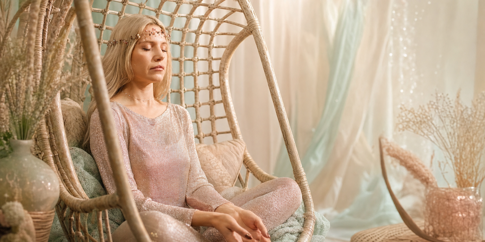
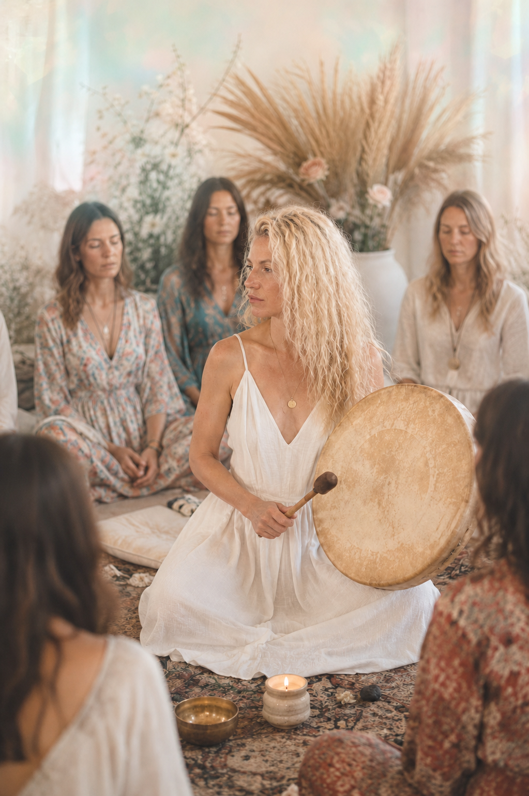

Психология и тело
Разговор, эмоции и телесные реакции собираются в понятную картину.
неопсихолог
Практик глубинной психологии, регрессии, расстановок, метафизики и современной медитации.
Елена переводит тонкое на человеческий язык и доводит мистический опыт до практического изменения в жизни.

кто она
Елена называет свое направление неопсихологией: это работа на стыке глубинной психологии, тела, регрессии, расстановок, МАК-карт, шаманских ритуалов, рода, голоса и современной медитации.
Разговор, эмоции и телесные реакции собираются в понятную картину.
Регрессия и расстановки помогают увидеть повтор и вернуть выбор.
Тонкий опыт, символы и шаманские практики становятся применимыми в жизни.
практика
Здесь можно говорить на языке психологии, тела, символов и мистического опыта, но итог всегда должен быть человеческим: ясность, выбор, энергия и следующий шаг.
Деньги, отношения, самоценность, страх проявленности, родовые лояльности и внутренние запреты.
Зажимы, тревога, усталость, психосоматика, потеря желания и живого импульса.
Когда старая стратегия уже не работает, а новая еще не стала видимой и устойчивой.
Инсайты, практики, сильные состояния, сны и знаки, которые нужно расшифровать и приземлить.
голос • мантры • настройка
Музыка Елены — это голосовые состояния, мантры и звуковые практики, которые помогают настроиться, вернуться в тело и услышать внутренний импульс без лишнего шума.
взять с собой
Несколько практик Елены можно скачать после подписки на Telegram-канал “Кластер уникальности”. Это доверительный вход в ее мир: голос, настройка и мягкая практика для самостоятельного контакта.

Позже можно подключить автоматическую проверку подписки через Telegram-бота.
Wild Ecstatic Dance
На Wild Елена приносит пространство, где мистический опыт можно не только пережить, но и собрать в понятный внутренний результат: через тело, голос, символы, род и действие.
Голос, внимание и состояние, которые помогают телу замедлиться и услышать себя.
Быстрый вход в тему: увидеть вопрос, образ, внутренний конфликт и следующий шаг.

спектакль-практика
Авторская практика Елены о связи с родом, внутренней опоре и той силе, которая становится доступной, когда история перестает быть тяжестью и возвращается как ресурс.
контакт
Напишите Елене, подпишитесь на каналы или сохраните страницу, чтобы вернуться к музыке, медитациям и практикам позже.